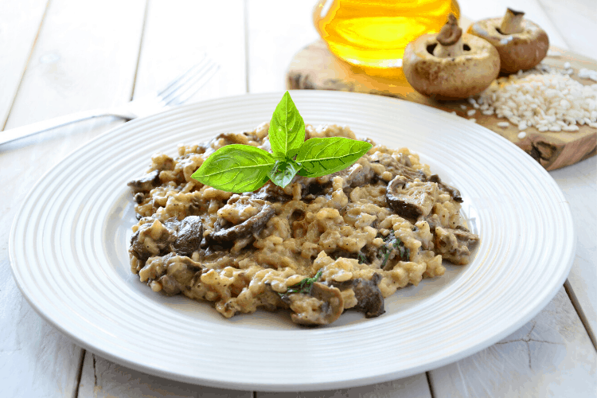

Mushroom Risotto

An uncomplicated version of a beloved Italian dish.
Since the stock is a big part of the flavor of this dish,
you can take things to the next level by simmering celery, carrots,
and onion in water to make a basic vegetable stock. The result is worth it!
Ingredients
- 6 cups vegetable broth
- 3 tablespoons olive oil
- 1 pound portobello mushrooms, thinly sliced
- 1 pound white mushrooms, thinly sliced
- 2 shallots, diced
- 1.5 cups arborio rice
- .5 cup dry white wine
- 3 tablespoons finely chopped chives
- 4 tablespoons butter
- .3 cup freshly grated parmesan cheese
- freshly ground black pepper to taste
- sea salt to taste
Instructions
- Add 1 tbsp olive oil to skillet and stir in the shallots.
Cook 1 minute, add rice, stirring to coat with oil, about 2 minutes.
When the rice has taken on a pale, golden color, pour in the wine,
continually stirring until the wine is fully absorbed.
- Add .5 cup broth to the rice and stir until the broth is absorbed.
Continue adding broth .5 cup at a time, stirring continuously, until the
liquid is absorbed and the rice is al dente, about 15 to 20 minutes.
- Remove from heat and stir in mushrooms with their liquid, butter,
chives and paremesan cheese.
- Season with salt and pepper to taste.